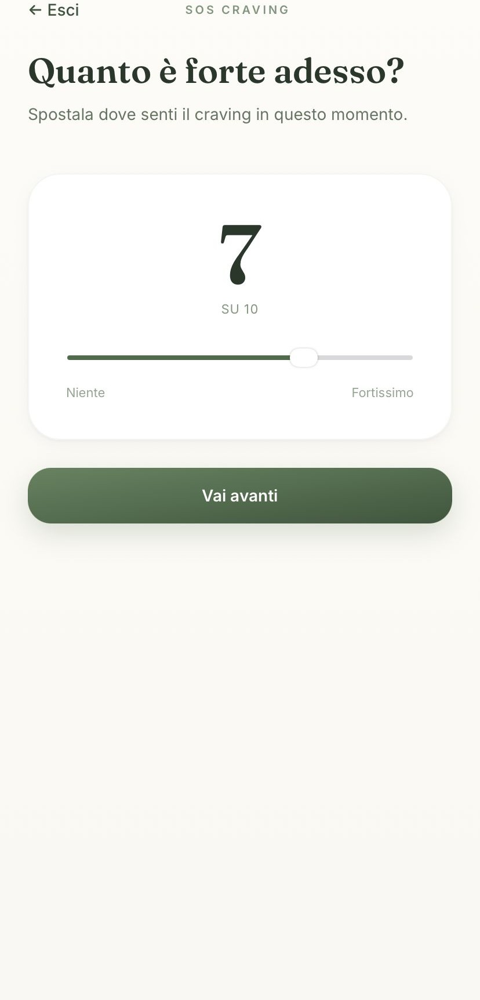
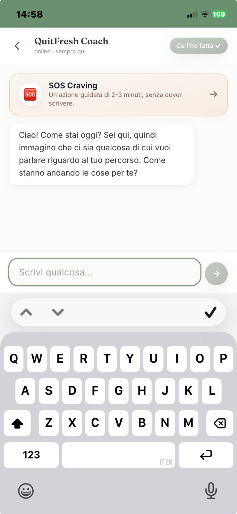
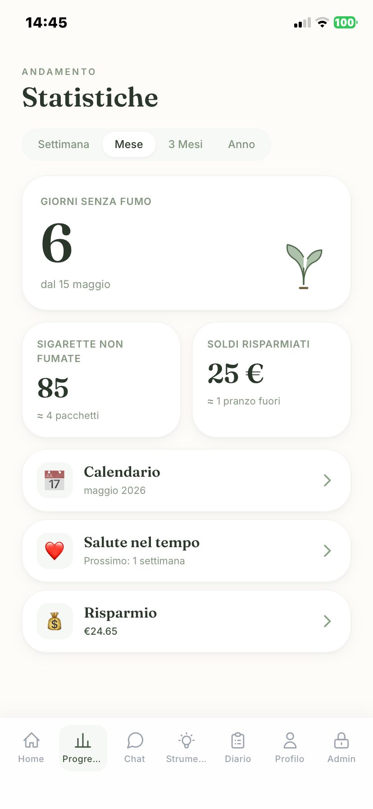

Smetti davvero. Iniziando a vedere quando fumi, e perché.
QuitFresh ti aiuta a riconoscere i tuoi automatismi e ti accompagna nel percorso con la citisina.
QuitFresh è pensata per te se…
Hai deciso di smettere
E vuoi farlo davvero, non per la sesta volta. Cerchi uno strumento che ti aiuti a capire come ci sei finito qui.
Stai usando la citisina
Tabex, Desmoxan, Todacitan. L'app gestisce dosi e orari sui 25 giorni del protocollo, così non devi ricordarteli tu.
Vuoi ridurre prima di smettere
Vai per gradi. Tracker, diario e SOS Craving sono lì da subito, anche senza terapia farmacologica.
Ricadi sempre negli stessi momenti
Dopo pranzo. In macchina. La domenica sera. Se ti riconosci, QuitFresh è fatta per vedere quei momenti prima di te.
Tre passi, niente di più.
Racconta come fumi oggi
Quante sigarette, in che momenti, perché. Bastano cinque minuti di domande mirate, niente questionari infiniti.
Imposti il tuo percorso
Citisina, riduzione graduale, o smettere di colpo. Se segui la citisina, l'app calcola dosi e orari sui 25 giorni del protocollo.
Inizi a osservarti
Ogni craving che registri diventa un dato. Dopo qualche giorno vedi i pattern: cedi sempre dopo pranzo, o quando guidi, o in pausa con i colleghi.
Come si presenta.
HomeGiorni, risparmio, fase citisina

SOS CravingAzione guidata 2–3 minuti

ChatSupporto sui tuoi dati reali

StatisticheTrend, pattern, traguardi salute
La sigaretta non arriva mai a caso.
Quando smetti senza guardarti, combatti contro un nemico invisibile. Quando i pattern emergono, smettere diventa una scelta consapevole — non una battaglia di forza di volontà.
-
Mattina
La sigaretta dopo il caffè.
Quella che "non si tocca". Inizia automaticamente — ancora prima di accorgertene.
-
Spostamenti
La pausa automatica appena sali in macchina.
Mano destra alla chiave, sinistra al pacchetto. Stesso ordine ogni volta.
-
Lavoro
Il gesto che arriva quando sei stressato.
Email difficile, riunione tirata, scadenza. La sigaretta come "valvola" — ma è il momento, non la nicotina.
-
Sera
Una sola sul balcone, dopo cena.
Quella più difficile da togliere. Silenzio, calma, fine giornata. L'app ti aiuta a riconoscere il rituale.
Promemoria dosi automatici, sui 25 giorni del protocollo.
Se segui la terapia con citisina (Tabex, Desmoxan), il protocollo è preciso: dosi a scalare e orari precisi. Saltare un'assunzione abbassa l'efficacia. QuitFresh gestisce tutto per te.
Cosa fa l'app durante la terapia
Imposti il tuo orario di prima dose. Il resto è automatico.
- Notifica push a ogni dose, calcolata sulla fase del protocollo
- Promemoria ricorrente se non confermi che l'hai presa
- Diario delle capsule e degli effetti collaterali
- Banner al giorno 5, il punto chiave del protocollo Sopharma
- Riconosce dove sei nelle 5 fasi e adatta i messaggi
Cosa succede ogni giorno.
Giorno 1–3
Inizi la citisina, continui a fumare ridotto. L'app ti guida con promemoria delle dosi e ti chiede come va. Registri i primi craving.
Giorno 5
Il punto del protocollo Tabex: si smette completamente. L'app ti avvisa al mattino, ti spiega perché è il momento giusto.
Settimana 1
I primi pattern emergono. Inizi a vedere quali momenti sono i più critici. Il counter dei giorni senza fumo cresce, vedi i soldi risparmiati.
Giorno 14
L'app ha abbastanza dati per dirti dove cedi più spesso. Le notifiche anti-craving si adattano ai tuoi orari critici.
Giorno 25
Protocollo citisina completato. Hai 25 giorni di osservazioni e dati. Da qui in poi è gestione del comportamento, non più della dipendenza chimica.
Puoi usare QuitFresh gratis.
Se vuoi approfondire il percorso, puoi sbloccare le funzioni avanzate con un pagamento unico. Nessun abbonamento, nessun rinnovo, nessuna carta richiesta per iniziare.
Free
€0Per sempre, senza scadenze.
- ✓Tracker giorni senza fumo, sigarette evitate, risparmio
- ✓SOS Craving — azione guidata anti-craving, sempre disponibile
- ✓Calendario citisina e diario capsule
- ✓Chat di supporto: 10 messaggi a settimana
- ✓Diario osservazioni: 7 giorni
- ✓Promemoria citisina: primi 3 giorni del protocollo
Premium
€4,99Pagamento unico. Nessun abbonamento.
- ✓Tutto del piano Free, senza limiti
- ✓Chat di supporto illimitata
- ✓Diario osservazioni senza limite di giorni
- ✓Promemoria citisina per tutti i 25 giorni
- ✓Statistiche avanzate: trend, breakdown orario dei craving
- ✓Analisi trigger personali sui tuoi dati
I dati che accumuli nel piano Free restano tuoi quando passi a Premium. Niente reset, niente perdita storico.
Quello che ci chiedono più spesso.
Funziona senza citisina?
Sì. La citisina è un percorso supportato bene, ma puoi usare QuitFresh anche con riduzione graduale, sostituti nicotinici, vareniclina, o smettendo di colpo. Il lavoro sui pattern e sui trigger vale per qualsiasi metodo.
I dati che registro sono privati?
Sì. I tuoi dati restano tuoi, non li vendiamo a terzi, non li usiamo per pubblicità. Puoi esportarli o cancellarli quando vuoi dal profilo. La chat usa OpenAI con l'opzione "non usare per addestramento" disattivata.
Cosa succede se ricado?
Si registra nel diario, il contatore riparte, e l'app non fa drammi. Ricadere è parte di smettere — quasi nessuno smette al primo tentativo. Il valore è nei dati che continui ad accumulare sui tuoi pattern.
Devo installare qualcosa?
No. QuitFresh è una web app: la usi dal browser come un sito qualsiasi, oppure la aggiungi alla schermata home in 10 secondi (istruzioni nell'app). Funziona offline e manda notifiche push come un'app nativa.
Perché €4,99 e non un abbonamento?
Perché smettere di fumare ha una fine, non è un servizio infinito. Paghi una volta, usi finché ti serve. Niente carte da disattivare, niente sorprese sul rinnovo.
Segui il percorso su Instagram
Storie reali di chi sta smettendo, osservazioni sui pattern più comuni, microcontenuti che fanno parte del percorso. Niente motivational, solo cose concrete.
@quitfresh